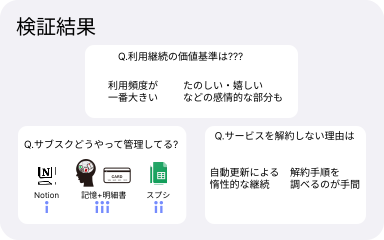

制作期間
- 個人制作なので１人のみ
使用ツール
- ・Figma
- ・GoogleForm
- ・Illustrator
- アプリ
- WEBデザイン
- HTML
- CSS
- JavaScript
- イラスト
OVERVIEW
サブスク型のサービスの市場は年々増加傾向になっており(下図参照)、 一人辺りが契約しているサービスの数が増えていくことが考えられます。 それにより、ユーザー側で使用しているサービスの管理・把握(値段や契約数)が 困難になるのではないかと考えられます。

引用先 https://www.yano.co.jp/press-release/show/press_id/2696
下記の図は、サブスクの利用実態の調査結果となっています。この調査結果から、利用しているサブスクを元が取れるほど使用できていない層が44%と、ほぼ半数がサービスの利用頻度が低いのにも関わらず契約を継続しているという課題が読み取れます。 以上の事実・結果を踏まえユーザー側で本当に自分に必要なサービスがわかるアプリのデザインを行いました。
引用先 https://www.cross-m.co.jp/report/life/20210331subscription/
UNDERSTANAD
二次調査の結果(上図参照)より、使用頻度が低いのにもかかわら契約を継続している層が44%と、過半数を占めていることがわかりました。こういった利用者が多い理由として、継続かキャンセルかを決める時に判断材料が足りず、キャンセルまで至らないということが大きな要因となっていると仮設を立てました。また、サブスク管理のサービスは、市場にもそう多くなく企業の事業レベルで取り組んでいる会社が少ないという背景も相まって、サブスクリプションサービスにおける契約の継続判断の難易度は、今後根深い問題になってくると考えられます。
上記の課題を基に下記のニーズが考えられました。 サブスクを利用しているユーザーに対して、サービス継続の判断基準と、サブスク継続に関して考える仕組みや機会が必要だと考えました。
IDEATION
現状の課題・ニーズを基に、解決策(仮説)の検討を行いました。ユーザーがサブスク継続判断を用意に行う事と、 自動更新を待つだけでなくユーザーがサービスの使用価値を考える仕組みを提供するために、契約サービスの合計金額の管理と、 サービスの使用時間のデータが可視化されているアプリを考案しました。サービス契約料金だけではなく、 ユーザーがどれだけサービスを使用しているかなどの費やした時間の客観的なデータがあれば、現状抱えている課題を解決できるのではないかと考えました。

これらの解決策(仮説)の価値検証としてプロトタイプを行うために、想定ユーザー像も定義しました。
PROTOTYPE
プロトタイプ作成のためにラフデザインから作成しました。 最初にボトムナビゲーションの検討を行い、 サブスクの追加や一覧などが確認できるホームと合計金額や使用頻度を確認できる分析と設定の3つをボトムナビゲーションとしてデザインしました。 デザインの特徴としては、アプリを開いた時に自分が契約しているサブスクが一覧で確認できるデザインにすることと、 サブスク一覧や合計時間や使用頻度の確認の際にカテゴリー毎にフィルタリングして可視化できるデザインにしました。
検証時に、わかりやすいようにHifiプロトタイプを作成しました。 この段階でHifiプロトタイプを作成した理由としては、 今回のアイデアはカテゴリー毎にカラーを設定することで、 グラフの視認性などをわかりやすくしているため、プロトタイピングでもこのアイデアでわかりやすいかなども検証を行っています。
現時点での解決策の妥当性を検証するために、プロトタイピングを二名の方に協力していただき実施しました。 目的としては、今回デザインした合計金額と使用頻度の可視化でサービス継続の判断することができるかどうかを中心に検証を行いました。
ユーザーの課題とニーズを探るために現状で困っていることに関してもインタビューを行いました。現状の課題としては、 解約することを忘れているということが多いことがわかりました。サービスの数は概ね認識していて支払いに対しても明細などでしっかり認識しています。 それでも解約を忘れてしまう理由を深堀りしたたところ、解約手順の複雑さが大きな要因であることがわかりました。多くのユーザーは解約方法がわからず、 サービス解約時にWEBなどで解約方法を検索してからじゃないと実行できないということがわかりました。 これらの作業の手間がかかり先延ばし、解約するという行為を忘れてしまうというインサイトを得ることができました。
DEEPLY UNDERSTAND
仮説検証を経て、合計金額・使用頻度の可視化はキャンセル判断の材料として機能するということが確認できたので、 よりリアルなユーザーの課題を理解するためにアンケートとインタビューを行いました。 対象はTwitter上でサブスク管理に関して困っているユーザーや 必要としている趣向のTweetをしていた方々6名に対してオンライン上でアンケートとインタビュー(6名の内2名の方々)を行いました。
ユーザーの課題とニーズを探るために現状で困っていることに関してもインタビューを行いました。 現状の課題としては、解約することを忘れているということが多いことがわかりました。 サービスの数は概ね認識していて支払いに対しても明細などでしっかり認識しています。 それでも解約を忘れてしまう理由を深堀りしたたところ、解約手順の複雑さが大きな要因であることがわかりました。 多くのユーザーは解約方法がわからず、サービス解約時にWEBなどで解約方法を検索してからじゃないと実行できないということがわかりました。これらの作業の手間がかかり先延ばし、 解約するという行為を忘れてしまうというインサイトを得ることができました。

DECIDE
調査結果・課題・ユーザーニーズを基にSubscrifyの想定ユーザー像の再定義を行いました。 実際にインタビューなどを行ってわかったこととしては、 サブスクを管理できていないほとんどの方々はお金に対しての意識が低いことでした。 また、サブスク契約数が5つ以上を超えると管理が困難であるということが確認できました。 それを踏まえて以下の図のようにペルソナを再定義しました。
現状のSubscrifyでのユーザーフローを作成して、 Subscrifyの全体の体験を通してのユーザーのペインポイントの特定を行いました。

インストール~サブスクの入力完了まで
ユーザーフローによるペインポイントの可視化で、契約しているサブスクの入力時と、 解約時のタスクの多さからユーザーに負荷がかかることがわかりました。 これらの課題を解決するために、インストール後のオンボーディングとサブスク入力時に、 あらかじめ有名なサービスはSubscrifyの中でプランなどをプリセットとして簡単に探せて入力できるような機能を搭載することを決定しました。
通知からサブスクの解約完了
また、ユーザーにサブスクの継続判断をユーザーに検討してもらうために、 サービスの更新日や利用頻度の低いサービスがあるとSubscrifyから通知する機能を搭載することで、 ユーザーに利用継続を判断できるようなシステムの体験をデザインしました。 また、解約の手間少なくするために、Subscrify上で各サービスの解約ページまでの導線をデザインすることで、 解約時の負荷を減らしユーザーが気持ちよく解約まで行えるような体験設計を目指しました。
UI DESIGN
オンボーディング画面
オンボーディングでは、自然な流れでユーザーにサブスクを追加してもらえるようなフローにしました。 機能の説明が終了したら、ある程度人気があるサブスクの候補を提示して初回入力のハードルをさげるようにデザイン。

サブスク追加画面
サブスクの追加でも、ユーザーがいきなりサブスク情報をサービス名からベタ打ちしてもらうのではなく、 サブスク検索で簡単に探せるようにデザイン。 また、サブスクの情報入力もプランなどをあらかじめプリセットで用意し入力負荷を下げるようにデザイン。

合計金額・使用頻度の確認画面
分析画面では、初回のプロトイプで頂いた、情報量が多いという意見を踏まえ修正を行った。 デフォルトでは、サブスクの個別データは3つしか表示されないようにデザイン。 合計金額のデーターは、年と月で表示可能に。使用時間は週と日が表示できるようにデザイン。
サービス解約までの画面
一度登録したサービスの個別の情報画面には、新たに解約までの導線をデザインした。 解約するボタンを押すと、各サービスの解約ページまで移動しそこからサービスの解約がスムーズに行えるようにデザイン。 サービス解約後は、Subscrifyでも解約済みとして管理するようにデザイン。 サブスクの特徴として、いつでも解約と再契約ができるため過去のサブスクを再契約することは少なくはないため、 このようなデザインにした。解約済みからは、また情報を入力しないで再度契約中へ保存することができるようにデザインした。
学んだこと・今後の課題
はじめてユーザーリサーチからデザインまで一貫して行い、いかにリアルなユーザーへのアプローチが大切なのかを学びました。 特に、今回の例でいうと通知機能の搭載は当初はそれほど重要視していませんでしたが、 アンケートやインタビューを通してよりリアルな意見や課題を聞くことで搭載する理由が明確になったことが実感できました。 今後も、デザイン一つとってもなぜそこにその機能があるかなど 論理的にデザインすることも大切に取り組んでいきたいです。
実装的な問題で使用時間の可視化は実現可能化どうかなどがあります。 Andoroidであれば、サードパーティー製のスクリーンタイムアプリなどの、 使用頻度的なものを可視化するサービスはありますがiOSでは、 使用時間などのデータが提供されていないため技術的に可能化どうか検討する必要があると考えています。
現状では、サブスク形式のアプリなどを管理の対象としているが、サブスクサービスは物理的なものも多くなってきている傾向にあると思います。例を出しますと、トレーニングジムなどの多くがサブスク契約だと挙げられますが、これらの使用頻度の可視化などそもそもデータが存在しない物理的な体験などのサービスに対しての使用頻度の可視化が難しいことが考えられます。 非デジタルサービスのサブスクの使用頻度の可視化についてどうするかなど検討する必要があると考えています。